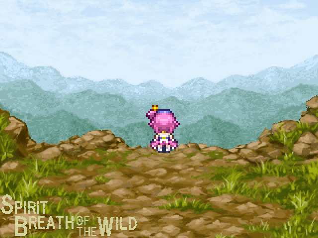

| No.3 スピリットブレスオブザワイルド | |
 | |
| 【作者名】かすていら | |
| 【使用ツール】2000 | |
| 【ジャンル】物欲センサー搭載サバイバル時々運ゲーワイルドRPG | |
| 【配信/投稿】共に可 | |
| 【作者コメント】 やるゲ習作です。 何故か無人島に置き去りにされたスピブレちゃんが、 50日の間で無人島から脱出するゲームです。 無人島の4つのエリアで採集したり、戦闘（デフォ戦）したり、クラフトしたりして、延命をして、のろしをあげたりして、 救助を待ちます。 割と運が絡んできますが、 運が良ければあっさり脱出出来たりします。 クリア時間はとりあえずかなり運が良くて5分ぐらいです。 普通は測ってないのでわかりませんが大体30~1時間分ぐらいだと思います。 ゲームバランスは調整中ですが、少なくとも提出までは出来ます。 | |
| 【管理人コメント】 お惣菜とインスタントで生きてる自活力皆無なことで有名なあのスピブレちゃんが！？ | |
| ダウンロード / 感想掲示板 | |
| 前の作品へ / 次の作品へ | |